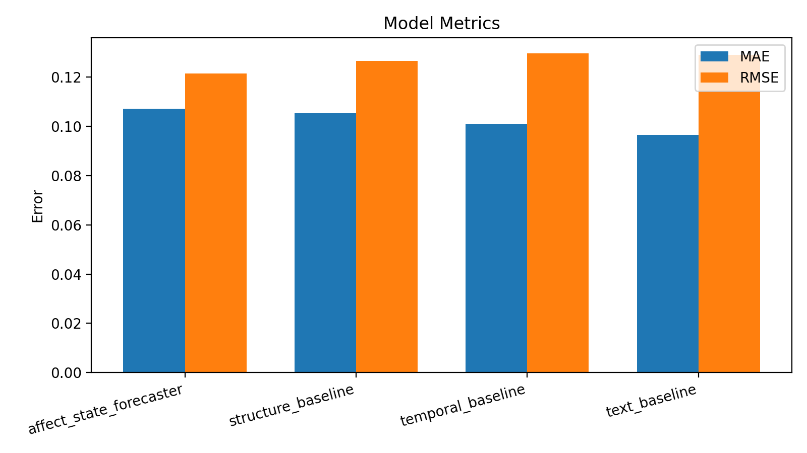
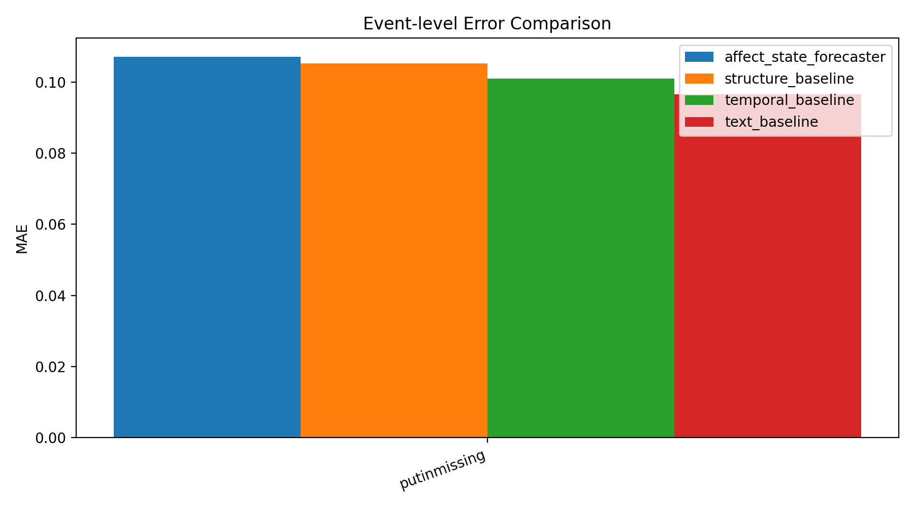
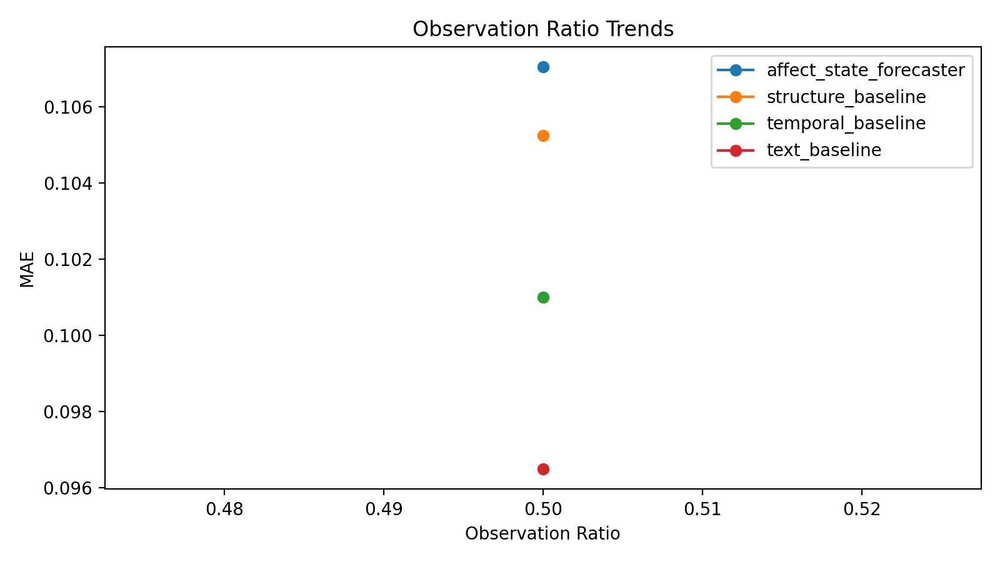

这个页面用于回答三件事：这轮实验为什么做、当前研究进展到了哪里、下一步为什么应该这样推进。
实验问题: 验证 held-out event=putinmissing 时各模型的 cross-event 泛化能力。
成功标准: affect_state_forecaster 在 held-out event 上保持与主实验一致的领先趋势。
失败标准: 若 held-out event 掉点显著，则后续优先做泛化与正则化。
对应 idea.md: 三、核心研究问题, 六、方法方案, 七、实验设计
数据: /tmp/pheme_cross_event_nzz5m343/putinmissing_train.jsonl
Ratio: putinmissing_train
模型: affect_state_forecaster, structure_baseline, temporal_baseline, text_baseline
参数: epochs=5, batch=16, device=cuda
总耗时(秒): 0.0
Warning 数: 0
Error 数: 0
最优模型: text_baseline；与上一轮相比的最佳 MAE 变化: 0.0091
| Model | Status | MAE | RMSE | Pearson | Spearman |
|---|---|---|---|---|---|
| affect_state_forecaster | completed | 0.10705672204494476 | 0.12132436037063599 | -0.6656603585936122 | -0.7074749701108396 |
| structure_baseline | completed | 0.10525719076395035 | 0.12649834156036377 | -0.41196692822341535 | -0.5020790110464023 |
| temporal_baseline | completed | 0.101011723279953 | 0.12950889766216278 | -0.09215715438447634 | -0.13693063937629152 |
| text_baseline | completed | 0.0964931771159172 | 0.12905849516391754 | 0.2884585138146513 | 0.296683051981965 |
该图用于比较模型整体误差，当前 MAE 最优模型是 `text_baseline`。

该图用于查看不同事件上的误差波动，帮助判断 cross-event 稳定性。

当前只有一个 observation ratio，因此该图主要起到占位作用，尚不能判断趋势。

可能原因: 当前时序编码没有有效利用 reply 顺序，或 observation window 信息密度不足。
与 idea.md 的关系: 削弱了 `idea.md` 中时间动态应带来增益的预期。
建议: 优先检查时间编码与序列长度处理；单次出现不建议新建 `idea.md`。
决策: 继续，但先做诊断
原因: Affect-State 主线被当前结果削弱，需要先确认是实现问题还是假设问题。
下一步: 因此下一步是 优先做 affect-state 消融、正则化和去结构对比。，而不是继续无选择地堆实验。
是否建议新增 idea: 是